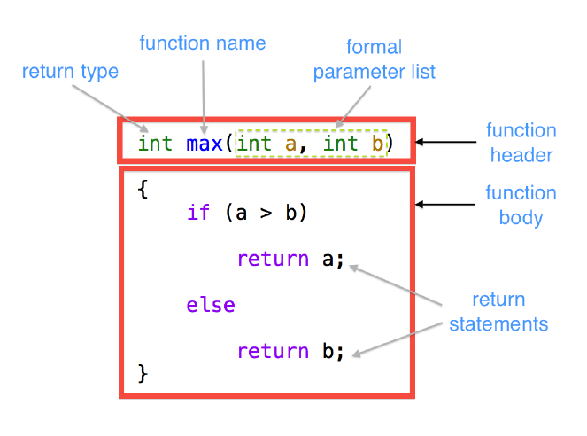

COMP 2012H Honors Object-Oriented Programming and Data Structures
Lab 2 Functions and Arrays
Review
Functions
A function is a group of statements that together perform a task. Every C++ program has at least
one function, which is int main().
-
Basic Function Components:
 -
Parameter passing methods:
- Pass-by-value: The formal parameter copies the value of the corresponding actual parameter.
- Pass-by-reference: The formal parameter becomes a reference variable or alias of the corresponding actual parameter.
- Function declaration - A function is declared by writing down its interface - its function prototype. This simply informs the compiler about the function's interface without generating any machine codes.
- Function definition - A function is defined by writing down its function header plus its function body. This will ask the compiler to generate machine codes according to the C++ codes in its function body.
- Function overloading refers to multiple C++ functions sharing the same name, but with different signatures. Note that two C++ functions cannot have the same name and signature.
- The scope of some identifier is a region in the source code, in which the identifier declaration is active.
Arrays
An array is a collection of homogeneous objects.
-
1-Dimensional Array
-
2-Dimensional Array

Source: Conway's Game of Life - Wikipedia
Introduction
Animation above demonstrates an instance of the Conway's Game of Life, which is famous and fascinating due to the exceptionally complex patterns it can create based on extremely simple rules. If you haven't heard of it before, there are quite a lot of articles and fancy examples out there. In fact, the Google search result page itself contains an interesting demo.
Conway's Game of Life is just one example of cellular automata. In this lab, you will simulate an elementary cellular automaton. It is a 1-D version of Conway's Game of Life, where you can specify your own rules.
Rules
An elementary cellular automaton (ECA) is a 1-D array of cells, with states that evolve over time. Each state can be represented as an 1-D array containing 0 and 1s, where 0 represents a dead cell and 1 a living cell. Each ECA is also associated with an initial state and a rule. The rule determines how a cell will evolve into the next state, given the states of the cell itself and its two neighbours.
As an example, suppose we have the following initial state:
1 0 0 1 0 1 0 1 1
with the following rule:
current pattern: 111 110 101 100 011 010 001 000
new state for center cell: 1 0 0 0 1 0 0 1
In order for a cell evolve to the next state, we check the state of the cell and its two neighbours, lookup for the corresponding pattern in the rule, then update the cell to the new state. Note that the state wraps around, i.e. the left neighbour of the leftmost cell is the rightmost cell, and vice versa.
initial state: 1 0 0 1 0 1 0 1 1
patterns: 110 100 001 010 101 010 101 011 111
next state: 0 0 0 0 0 0 0 1 1
Rule numbering system
In order to describe different rules efficiently, we use the the Wolfram code system to refer to different rules. Note that each rule has the following properties:
- Each rule consists of one binary digit (0 or 1) for each pattern
- There is a total of 8 patterns, corresponding to the binary numbers 0002 through 1112
The Wolfram code of each rule is essentially a (decimal) number between 0 and 255 inclusive, such that its i-th digit when written as a 8-digit binary number corresponds to the update value for pattern i. For example, the rule above has a Wolfram code of 137 (equivalent to 100010012).
Lab Work
In this lab, we will implement a console ECA simulator that sets up an ECA under some rule and initial state. After initialization, the user inputs a certain number N, and the program simulates the change of states of the ECA up to step N, and displays the result. The program takes the following form:
- Task 1 - Initialization
- Displays initial state of ECA
- Task 2 - Main program loop
The parts in italics has been implemented in the skeleton code already. Your job is to complete the tasks to make the program function as intended. We will discuss the tasks in greater detail one by one.
Task 1.1 - Initialize rule
Implement the initRule function, which asks the user to enter the ECA
rule and store the rule number. The number is stored in binary digits, so that we can determine how to
update each ECA cell later on, depending on the pattern of the cell.
Instructions
-
Print
"Please enter the rule number:". - Read user input. You can assume the input is an integer.
-
Check whether the number input is within the range [0, 255].
-
If not, ask the user to retry by printing
"Invalid rule number, please retry:"and keep retrieving new input until the number is valid.
-
If not, ask the user to retry by printing
-
Convert the rule number to a 8-digit binary number, and store the bits in the predefined array
rule[], such thatrule[0]stores the least-significant bit (i.e. value corresponding to the "000" pattern), andrule[7]stores the most-significant bit (i.e. value corresponding to the "111" pattern). -
Store the (decimal) rule number in the predefined variable
ruleNum.
Notes
-
To convert a decimal number to its binary part, you can repeatedly perform the following:
-
Store the remainder of the number divided by 2, using
%. - If the number is odd, subtract 1 from it.
- Divide the number by two.
-
Store the remainder of the number divided by 2, using
- Repeat the above procedure for 8 times. The sequence of digits collected in step 1 will be the digits of the corresponding binary number, from smallest to largest (i.e. right to left).
- Example - The following procedure shows how to convert 6910 into a binary number:
number: 69 -> 34 -> 17 -> 8 -> 4 -> 2 -> 1 -> 0
digits: 1 -> 0 -> 1 -> 0 -> 0 -> 0 -> 1 -> 0
binary number: 1000101
contents of rule[]: [1, 0, 1, 0, 0, 0, 1, 0]
Task 1.2 - Initialize state from input
Implement the initStateFromInput function, which initializes the ECA
cells based on manual input. The user first enters the initial no. of alive cells, then enters the
column numbers of these cells one by one. In this function, the following data structures are to be
modified:
-
int grid[HEIGHT][WIDTH];- This is a 2D array, with each row representing the ECA at a particular step. We initially set the top row to the initial state, then fills in the rows one-by-one as we update the ECA state again and again according to the rule. Thus, this is a 2D visualization of how the ECA state evolves over time.-
WIDTHis the number of cells in the ECA, and is by default set to 60. -
In practice,
gridhas a finite number of rows, which is defined asHEIGHTand set to 15 by default. Whenever the bottommost row is reached, we overwrite the top row with the the next state, and start again from the top.
-
-
int initialState[WIDTH];- This is a 1D array holding the initial ECA state, which will be used when we have already run updates for multiple iterations and need to reset the ECA. As the contents ofgridwill get overwritten constantly, we need a separate container to store the initial state.
Instructions
-
Print
"Please enter the number of cells alive in the initial state:". - Read user input. You can assume the input is an integer.
-
Check whether the number input is within valid range. There must be at least one alive cell, and
cannot be greater than
WIDTH.-
If not, ask the user to retry by printing
"Invalid number of living cells, please retry:"and keep retrieving new input until the number is valid.
-
If not, ask the user to retry by printing
-
Print
"Please enter the column at which the cells are alive:". -
Repeatedly read N integers, where N is the previously received number. You can expect that each of
the input is an integer. After reading each integer, do the following checking procedure
before reading the next one:
-
If the input is outside the range [0,
(WIDTH - 1)], print"Column out of bound". -
If the input is the same as a previous input column, print
"Column duplicated". - Keep on reading input, until it does not violate the above rules.
-
If input
colis valid, setinitialState[col]andgrid[0][col]to 1.
-
If the input is outside the range [0,
Notes
-
For the test input used for grading, you can assume that each input sequence of column positions
consists of exactly N valid integers, and possibly a few more invalid integers. For
example, if N is 5, a potential sequence of input would be
"4 15 -2 58 27 58 23", where-2and the second58are invalid and should be ignored.
Task 1.3 - Initialize state randomly
Implement the initStateRandomly function. In this function, the user
enters a probability value p between 0 and 1, and you should set the initial value of each ECA
cell to 1 with a probability of p.
Instructions
-
Print
"Please enter the fill rate:". - Read user input. You can assume the input is a floating point number.
-
Check whether the number input is within the range [0.0, 1.0].
-
If not, ask the user to retry by printing
"Invalid probability, please retry:"and keep retrieving new input until the number is valid.
-
If not, ask the user to retry by printing
-
Fill in
grid[0][]andinitialState[]by callinggetRandNum(p)for each element. This function will return a value in {0, 1}, sampled from a Bernoulli distribution with probability p.
Notes
-
We use a fixed random number generator included in the skeleton code with a fixed seed.
Given that the value of p is the same, the sequence of 0 and 1s generated from
getRandNum(p)should always be the same every time the program is executed, regardless of the environment you compiled the program in. - In order to ensure your program output is exactly the same as ours, please make sure to initialize the cells from left to right, and do not change the seed value.
Task 2.1 - Get neighbours' states
Implement the getNeighbourState function. Given a pair of row and
column, return the corresponding pattern for grid[row][col].
Instructions
- The decimal number of the pattern should be returned. For example, if the pattern is "011", the integer 3 should be returned.
- Remember that for the leftmost cell of a state, the rightmost cell should be used as its left neighbor when determining the pattern. Similarly, for the rightmost cell of a state, the leftmost cell should be used as the right neighbor.
Task 2.2 - Update next state
Implement the update function, which takes the current ECA state and
update it according to the rule. Two variables are used to store which state the ECA is currently in:
-
curStepstores the current iteration number. It is a non-negative integer. -
curRowstores the row number ofgridthat corresponds to the current row. It is an integer within the range [0,(HEIGHT - 1)]
Instructions
-
Based on the current state (
grid[curRow]), update the next state usinggetNeighbourStateand the rule. The next state should either be the next row, or the top row whencurRowhas reached the bottommost row. -
Remember to update
curRowandcurStepaccordingly.
Task 2.3 - Get the state after given step
Implement the getState function. This function is called every time
the user enters an iteration number, which is passed as the step
parameter. You can assume step to be a non-negative integer. In this
function, the program repeatedly updates the ECA until the specified iteration is reached.
Note that the iteration numbers do not necessarily follow ascending order. If the input iteration number
is smaller than curStep, the program should reset back to the initial
state (stored in initialState), then start updating from the
beginning.
Instructions
-
Run
update()untilcurStepreachesstep.-
If
step < curStep, you will need to first reset the ECA to the original state, i.e.curStep = curRow = 0. -
Otherwise, you can start updating from the current
curStepdirectly, without restarting from the beginning.
-
If
-
You can assume
stepis valid (i.e. a non-negative integer).
Resources & Sample I/O
- Skeleton code: lab2_skeleton.zip
- Demo program: Windows / MacOS
Sample I/O
You may wish to compare your program output against the expected output using a diff checker. Additionally, we will always end our sample inputs during grading with -1 to terminate the program.
Rule 18
Rule 18 generates a fractal pattern resembling the Sierpiński triangle.
Elementary Cellular Automaton
Please enter the rule number:
18
Please specify the initial state. 'R' for random generation, 'M' for manual input.
M
Please enter the number of cells alive in the initial state:
1
Please enter the column at which the cells are alive:
30
State of rule 18 after 0 steps:
============================================================
@
============================================================
Please specify the number of steps
14
State of rule 18 after 14 steps:
============================================================
@
@ @
@ @
@ @ @ @
@ @
@ @ @ @
@ @ @ @
@ @ @ @ @ @ @ @
@ @
@ @ @ @
@ @ @ @
@ @ @ @ @ @ @ @
@ @ @ @
@ @ @ @ @ @ @ @
@ @ @ @ @ @ @ @
============================================================
Please specify the number of steps
30
State of rule 18 after 30 steps:
============================================================
@ @ @ @ @ @ @ @ @ @ @ @ @ @
@ @
@ @ @ @
@ @ @ @
@ @ @ @ @ @ @ @
@ @ @ @
@ @ @ @ @ @ @ @
@ @ @ @ @ @ @ @
@ @ @ @ @ @ @ @ @ @ @ @ @ @ @ @
@ @ @ @
@ @ @ @ @ @ @ @
@ @ @ @ @ @ @ @
@ @ @ @ @ @ @ @ @ @ @ @ @ @ @ @
@ @ @ @ @ @ @ @
@ @ @ @ @ @ @ @ @ @ @ @ @ @ @ @
============================================================
Please specify the number of steps
100
State of rule 18 after 100 steps:
============================================================
@ @ @ @ @ @ @ @ @ @ @ @ @ @
@ @ @ @ @ @ @ @ @ @ @ @ @ @ @ @ @ @ @ @ @ @ @ @ @ @ @ @
@ @
@ @ @ @
@ @
@ @ @ @
@ @ @ @
@ @ @ @ @ @ @ @
@ @
@ @ @ @
@ @ @ @
@ @ @ @ @ @ @ @
@ @ @ @ @ @ @ @ @ @ @ @ @ @ @ @
@ @ @ @ @ @ @ @
@ @ @ @ @ @ @ @ @ @ @ @ @ @ @ @
============================================================
Please specify the number of steps
-1
Rule 30
Rule 30 is also an interesting rule: the central column displayed (i.e. the different states of the central cell over time) surprisingly exhibits randomness. In fact, you can interpret this column as a bit stream and use it as a pseudo-random number generator.
Elementary Cellular Automaton
Please enter the rule number:
30
Please specify the initial state. 'R' for random generation, 'M' for manual input.
M
Please enter the number of cells alive in the initial state:
1
Please enter the column at which the cells are alive:
30
State of rule 30 after 0 steps:
============================================================
@
============================================================
Please specify the number of steps
14
State of rule 30 after 14 steps:
============================================================
@
@@@
@@ @
@@ @@@@
@@ @ @
@@ @@@@ @@@
@@ @ @ @
@@ @@@@ @@@@@@
@@ @ @@@ @
@@ @@@@ @@ @ @@@
@@ @ @ @@@@ @@ @
@@ @@@@ @@ @ @ @@@@
@@ @ @@@ @@ @@ @ @
@@ @@@@ @@ @@@ @@@ @@ @@@
@@ @ @ @@@ @ @@@ @ @
============================================================
Please specify the number of steps
30
State of rule 30 after 30 steps:
============================================================
@ @ @ @@@ @ @@ @ @ @@@@@ @ @@@@@@ @ @ @@ @ @
@@ @ @@@ @@@@ @ @@@ @
@@ @@@@ @@ @@@ @@ @@ @ @@@
@@ @ @ @@@ @ @@ @@@ @@@@ @@ @
@@ @@@@ @@ @ @@@@@@ @ @ @@@ @@@@
@@ @ @@@ @@@@ @@@@ @@@ @@ @ @
@@ @@@@ @@ @@@ @ @@ @ @ @ @@@ @@@
@@ @ @ @@@ @ @@@ @@ @ @@@ @@ @ @ @ @
@@ @@@@ @@ @ @@@ @ @ @@@@ @ @ @@ @@@@@@
@@ @ @@@ @@@@ @@ @@@@@ @ @@@@@ @ @ @
@@ @@@@ @@ @@@ @ @@ @ @ @@ @ @@@@@ @@@
@@ @ @ @@@ @ @@ @ @@@@ @@ @ @@ @@ @ @@ @
@@ @@@@ @@ @ @@@ @ @ @ @@@ @@@@ @ @@ @ @@ @ @@@@
@@ @ @@@ @@@@ @@@@ @@ @@ @@@ @ @ @@@@ @ @ @
@@ @@@@ @@ @@@ @ @@ @ @ @@@ @ @@ @@@@ @@@ @@ @@@
============================================================
Please specify the number of steps
100
State of rule 30 after 100 steps:
============================================================
@ @@@ @ @ @ @@@ @ @@@@@ @ @@@@ @@@@@@ @ @
@ @ @@@@ @@ @@ @ @@@@@ @@ @@ @@@ @ @@@@@
@ @@ @@ @ @ @@ @@@ @ @ @@ @@@ @ @@ @ @@@ @@
@@ @ @ @ @@ @ @ @ @@ @@@ @@ @ @ @ @@@@ @@ @@@ @
@ @@@@ @@@@ @ @@@@@ @@ @@@ @ @@@@ @@ @ @ @ @@@ @@ @
@@@ @ @@@ @ @ @ @ @@ @ @ @ @@ @@ @ @ @@ @
@ @ @@@ @@ @@ @@@@@@@@ @ @@ @@@@@ @ @@@ @@@@ @ @@@
@@@@@@@ @ @ @@ @ @@ @@@@ @@@ @ @ @@@ @ @
@@ @ @@ @ @ @ @ @ @@ @ @ @@ @@@@ @ @@ @@
@ @ @@ @ @ @@@@ @ @@ @@ @ @@@@@@ @@ @ @@@@@@ @
@ @@ @@ @@@@ @ @ @ @ @@ @@@@ @ @@@@ @@ @@@@@
@@ @ @@@@ @@@@ @@ @@ @@@ @ @ @ @@@ @@ @ @@ @@@@@ @
@@ @@@@ @@@ @ @@@ @ @ @ @@ @@ @@@ @@@@ @@@ @@
@@@ @ @@ @ @@ @ @@@@ @@ @ @ @ @@@ @@@ @ @ @@
@@ @ @@ @ @@@@@@ @@@@ @ @ @@@@ @ @@@ @ @@@@@@ @@ @
============================================================
Please specify the number of steps
-1
Rule 110
Rule 110 is the first rule proven to be Turing-complete, similar to Conway's Game of Life. In other words, the patterns of 0s and 1s generated by rule 110 are in principle able to simulate any type of calculation or computer program.
Elementary Cellular Automaton
Please enter the rule number:
110
Please specify the initial state. 'R' for random generation, 'M' for manual input.
M
Please enter the number of cells alive in the initial state:
1
Please enter the column at which the cells are alive:
30
State of rule 110 after 0 steps:
============================================================
@
============================================================
Please specify the number of steps
14
State of rule 110 after 14 steps:
============================================================
@
@@
@@@
@@ @
@@@@@
@@ @
@@@ @@
@@ @ @@@
@@@@@@@ @
@@ @@@
@@@ @@ @
@@ @ @@@@@
@@@@@ @@ @
@@ @ @@@ @@
@@@ @@@@ @ @@@
============================================================
Please specify the number of steps
30
State of rule 110 after 30 steps:
============================================================
@@@ @@@@ @@@ @ @@ @@@
@@@@@@@@ @@ @@@
@@ @@@@ @@ @
@@@ @@ @ @@@@@
@@ @ @@@ @@@@ @
@@@@@ @@ @@@ @ @@
@@ @ @@@@@ @ @@ @@@
@@@ @@ @@ @@@@@@@@ @
@@ @ @@@@@@ @@ @@@
@@@@@@@ @ @@@ @@ @
@@ @ @@@@ @ @@@@@
@@@ @@ @@ @@@ @@ @
@@ @ @@@ @@@ @@ @ @@@ @@
@@@@@ @@ @@@ @@@@@@ @@ @ @@@
@@ @ @@@@@ @@@ @@@@@@@@ @
============================================================
Please specify the number of steps
100
State of rule 110 after 100 steps:
============================================================
@@@@@ @ @@@@@@@ @ @@ @@@@@ @@@ @@@@@ @ @@@@@ @@@
@@ @@@ @@ @ @@ @@@@@ @ @@ @@@ @@@ @@ @ @@ @
@@ @@ @ @@@ @@@@@@@ @ @@ @@@@@ @ @@ @@@@ @@ @@@@@ @
@ @@@@@@@ @ @@ @ @@ @@@@@ @@@ @@@@@ @ @@@@@ @@@
@@@@ @@@ @@@ @@ @@@@@ @ @@ @@@ @ @@@@ @ @@ @
@ @@ @ @@ @ @@@@@ @ @@ @@@@@ @ @@@@ @ @@ @@@@@
@@ @@@@@@@@@@ @@ @ @@ @@@@@ @@@ @@ @ @@ @@@@@ @
@@@ @@ @ @@@ @@ @@@@@ @ @@ @@@@ @@@@@@@ @ @@
@@ @ @@@ @@@@ @ @@@@@ @ @@ @@@@@ @@@ @ @@ @@@
@@@@@ @ @@ @@@@@ @ @@ @@@@@ @ @@ @ @@ @@@@@
@@ @@@ @@@ @@ @ @@ @@@@@ @ @@@@@@@ @@@@@ @
@ @@ @ @@@ @@ @ @@ @@@@@ @ @@@@@ @@ @@@@@ @ @@
@@ @@@@@@@ @@@@ @@ @@@@@ @ @@ @@ @@@@@@ @@@ @@@
@@@ @@ @@@ @ @@@@@ @ @@ @@@ @@@ @@ @ @@ @@@ @
@@ @ @@@ @@ @ @@@@ @ @@ @@@@@ @@@ @ @@@ @@ @@@@@ @@@
============================================================
Please specify the number of steps
-1
Randomized example
Elementary Cellular Automaton
Please enter the rule number:
30
Please specify the initial state. 'R' for random generation, 'M' for manual input.
R
Please enter the fill rate:
1.2
Invalid probability, please retry:
0.7
State of rule 30 after 0 steps:
============================================================
@@@ @@@ @ @@@@@ @@ @ @@@@ @@@ @@@@ @ @@@@@@@@@ @@
============================================================
Please specify the number of steps
1347
State of rule 30 after 1347 steps:
============================================================
@ @@@ @ @@@@ @@@ @ @ @ @ @@ @ @@@@@@ @@@@
@@@@ @@ @@ @@@ @ @@@ @@ @@ @@@ @@ @ @@ @ @
@@ @ @@ @ @ @@ @@@ @ @ @@ @ @ @@@ @ @ @@ @@@
@ @ @@ @ @@@ @ @ @@@ @@@@@@@ @@@@@@@@@ @@@ @@@@ @ @@ @@
@ @ @ @ @ @ @ @ @@ @ @@@ @ @@@@ @@@
@@ @@@@ @@ @@ @ @@@@ @ @ @@@ @@ @ @@@ @@ @ @
@ @ @ @ @ @ @ @@ @@ @ @@ @@@ @ @@@ @ @@@@@
@@@@@ @@@@@@@@ @@ @@ @ @ @@ @@@@ @@ @ @@@@ @@@@
@@ @@@ @ @@@ @ @ @ @ @@@ @@@@ @@ @ @@ @
@ @ @@ @ @@ @ @@@ @ @@@@@ @@ @ @ @ @@ @ @ @@@ @
@@@@ @@@@ @@ @@@@ @ @ @ @ @@@ @@ @ @ @ @ @ @
@@@ @ @ @@ @@@ @ @@ @@ @@ @ @ @@@ @ @@@@ @ @@ @@
@ @@@ @@@@@ @ @ @@ @ @ @ @@ @ @@@@ @@@ @ @ @ @
@ @@ @@ @ @@@ @@@ @@ @ @ @@ @ @ @@ @@ @ @@ @
@@@ @ @@@ @ @@@ @@@ @@@@@@ @ @@@@ @@@ @@ @ @ @ @
============================================================
Please specify the number of steps
42
State of rule 30 after 42 steps:
============================================================
@ @@ @@@ @@ @ @@ @@ @ @ @ @ @@ @ @@ @ @@ @@@@ @
@@@@ @ @@ @ @@@@@@ @ @ @ @@ @@ @ @ @ @@@ @ @ @ @@
@ @@ @@ @ @@ @ @@@@@@ @ @ @ @@@@ @ @ @@@@@ @@ @
@@@ @@ @ @ @ @@ @@ @ @@@@@@@ @ @@ @@ @ @@
@@@ @@@@@@ @@@@ @ @@ @ @@ @ @ @@ @ @ @ @@@@@
@@ @ @ @ @ @@ @@ @@ @@@@@ @@@@ @@ @@ @
@@@ @ @@@ @@@ @@ @@@@ @@@ @@@ @ @@ @@@ @ @ @ @@
@ @ @ @@ @@@ @ @ @ @@@@ @ @@ @ @@@@@ @@@@
@@ @@@@@@@ @@@ @@@@ @@@ @@@ @@ @@@@ @@@@@@ @ @
@ @@ @ @ @@@ @@@ @ @ @ @@ @ @ @@@ @@
@ @@@@ @@@@@ @ @@ @ @@@ @@ @@@@ @ @@@ @@@ @@ @
@@ @ @ @@ @@@ @ @@@ @ @ @ @@@@ @ @@ @ @ @@@
@ @@ @@@ @@ @ @@ @ @ @@ @@@@@@ @@ @@@ @ @ @@ @ @
@ @@@@@@@ @@@ @ @ @@@ @ @ @@ @ @@@@ @@@ @ @@@ @@
@@ @ @ @@ @@ @ @ @ @ @@@@ @@ @@@ @ @ @@@ @
============================================================
Please specify the number of steps
-1
Multiple initial alive cells
Note that multiple positions can be entered on the same line separated by space (see line 15 below), instead of entering line by line.
Elementary Cellular Automaton
Please enter the rule number:
30
Please specify the initial state. 'R' for random generation, 'M' for manual input.
M
Please enter the number of cells alive in the initial state:
-1
Invalid number of living cells, please retry:
100
Invalid number of living cells, please retry:
10
Please enter the column at which the cells are alive:
-2
Column out of bound
1 23 24 17 3 9 10 49 56
24
Column duplicated
39
State of rule 30 after 0 steps:
============================================================
@ @ @@ @ @@ @ @ @
============================================================
Please specify the number of steps
100
State of rule 30 after 100 steps:
============================================================
@ @@ @@@@ @@ @@ @@@@ @@@@@@ @@ @@@@@ @@ @ @@@ @ @@
@@@ @ @@@ @@@ @ @ @@ @ @@@ @ @ @@@ @@ @ @
@@ @@@@ @@ @ @@@@ @@ @ @ @@ @ @ @@ @ @ @ @ @@ @@
@@@ @ @ @@@@@ @ @ @@ @@ @@@@@ @@ @ @@ @@ @ @ @
@@ @ @@ @ @ @ @@@@@ @ @@@ @@@ @ @@@ @ @ @ @@@@@
@ @@@@@@ @ @@ @@@@@ @ @ @ @ @@ @ @@@@@@@ @
@@ @ @@@ @ @@@ @ @@ @@ @@@@@@ @@ @@ @@ @@
@ @@ @@ @ @ @ @@@ @@ @ @ @ @@@ @ @ @@ @ @
@@@ @ @@ @ @@ @@@@@@@ @ @@@@@@@ @@ @ @@@ @@ @@ @ @
@ @ @ @ @ @ @ @@ @ @ @@ @@@@ @ @ @@ @@@ @
@@ @@ @@@@ @@@@@ @@ @ @@ @@@@@ @@@ @ @@ @ @ @ @
@ @ @@@@@@@ @ @ @@@ @@ @ @ @ @@ @@@@ @ @ @@ @ @
@ @ @@@@@@ @ @ @@ @@@@@@ @@ @ @@ @@@@@ @ @
@@@ @@ @@ @@ @@@@@ @@@ @ @@ @@@@ @@ @ @@@ @
@ @ @@ @ @@ @ @ @ @@ @ @ @@@ @@@@ @@ @
============================================================
Please specify the number of steps
7
State of rule 30 after 7 steps:
============================================================
@ @ @@ @ @@ @ @ @
@@ @@ @@ @ @@@ @@ @ @@@ @@@ @@@
@ @ @ @@ @@ @@ @ @@ @@ @@ @ @@ @ @@ @@
@@@ @ @ @@@ @@@ @@@ @ @@@ @ @@ @@@@ @@ @@@@@@ @@@
@@ @ @ @ @ @ @ @ @@ @@ @ @ @@ @ @ @
@ @@ @ @@ @@@ @@@ @@ @@ @@ @ @@ @@@@ @@ @ @@@@ @@@@@
@@@ @ @ @ @ @ @ @ @ @@ @@ @ @ @ @ @ @@
@ @@@@ @@@@@ @@@ @@@@@@@@@@@ @@@ @@@@ @@@@@ @@ @@@@@ @ @
============================================================
Please specify the number of steps
-1
Submission & Grading
- Deadline: Friday, 1st October 2021 23:59.
- You may earn 1 point for each lab via Automated Grading on the ZINC Online Submission System.
- Please check here for a usage overview of ZINC.
-
Rename your source file as
lab2.cppand zip it aslab2.zipfor submission to ZINC.-
You need to name your source file as
lab2.cppotherwise ZINC cannot find the file. - How to create a zip file in Windows 10.
- How to create a zip file in macOS.
-
Just zip
lab2.cpp, not a folder containinglab2.cpp.
-
You need to name your source file as
Page maintained by
- Hong Wing PANG
- (hwpang@connect.ust.hk)
- Last Modified: